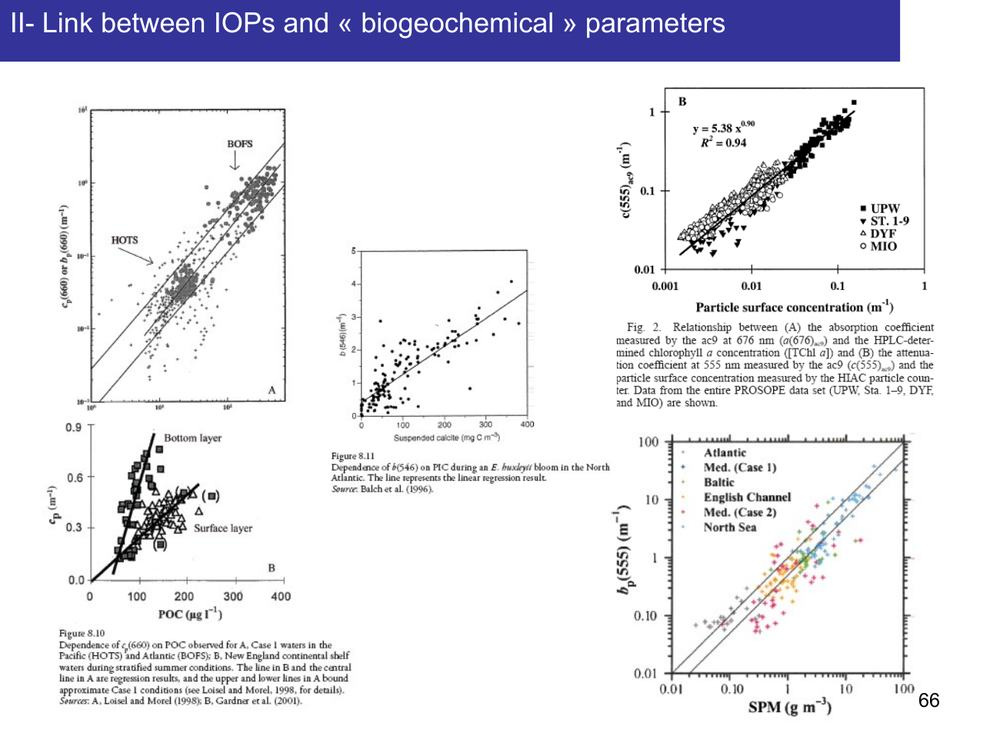
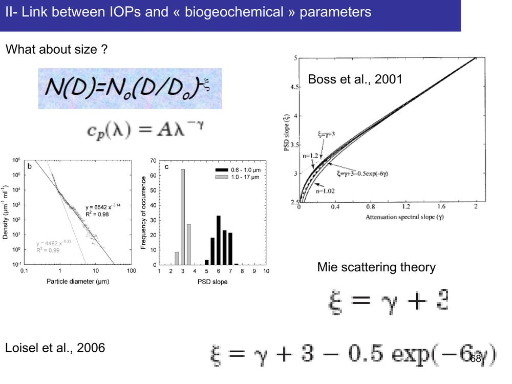
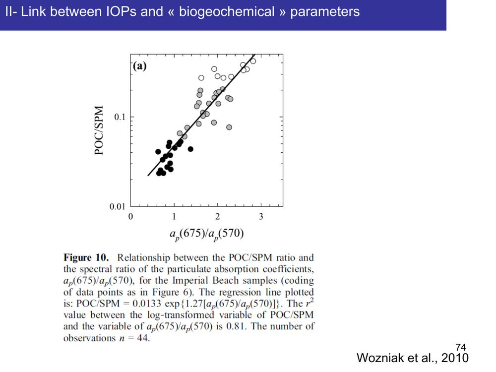

F · IOPs and biogeochemistry
From IOPs to Chl, POC, CDOM–DOC, fluorescence and diel cycles (slides 63–84)
IOP from particle properties

Lecture slide 63
- Sum over particle classes
- Number × efficiency × area
- σ in m², Q dimensionless
- N/V in m⁻³
IOP = Σ N Q S, symbol by symbol
Large and small particles

Lecture slide 64
- Large: diffraction, ∝ area
- Small: Rayleigh, ∝ volume
Scattering and attenuation versus Chl

Lecture slide 65
- Power law of Chl, exponent 0.7
- Spread ≈ ×2–3
- Case-1 relation
Scattering from Chl, symbol by symbol
Scattering versus particle load

Lecture slide 66
- POC, particle surface, SPM
- Roughly linear on log–log
- Regional differences
Size and the attenuation slope

Lecture slide 68
- Junge power-law size distribution
- Attenuation spectrum power law
- The two slopes are linked by ξ = γ + 3
Size distribution and attenuation slope
Particle absorption and POC

Lecture slide 74
- Red-to-green absorption ratio R
- Exponential in R
- r² = 0.81, n = 44
POC/SPM, symbol by symbol
CDOM versus DOC and salinity

Lecture slide 77
- Fresh water ≥ 10 m⁻¹
- Oceanic ≤ 0.1 m⁻¹
- Near-conservative mixing
- DOC relations regional (slide 76)
Fluorescence quenching

Lecture slide 80
- Chl, packaging, quenching
- Fluorescence drops at mid-day
- HPLC Chl does not
Diel cycles

Lecture slide 81
- cp: day growth, night loss
- Fluorescence: no clear cycle
- Density coordinates (slide 82)
Bloom, front and nepheloid layer

Lecture slide 84
- Bloom: bbp/bp ≈ 0.006
- Nepheloid layer: 0.012–0.018
- Boss et al., 2004
Key points
- IOP = Σ N Q S; Chl, POC, SPM set scattering
- ξ = γ + 3
- CDOM–DOC relations are regional
- Fluorescence needs quenching correction